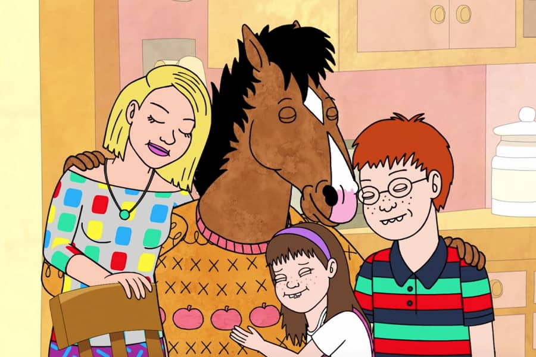

Bojack Horseman
Hola, soy BoJack Horseman, un actor que una vez fue famoso, pero ahora soy... bueno, ahora soy algo más complicado. Mi carrera comenzó como el protagonista de Horsin' Around, un programa de televisión familiar de los 90 que me hizo el ídolo de toda una generación.
Lamentablemente, mi paso por la fama fue tan fugaz como mi estabilidad emocional, y ahora trato de encontrar algún tipo de sentido en este mar de decisiones cuestionables y montones de errores.

Datos curiosos
- Vivo en una mansión, pero está vacía y, al igual que yo, en ruinas.
- He tenido más relaciones tóxicas que las que puedo contar con los dedos de las manos, pero siempre estoy esperando el "gran amor" que me haga cambiar. Spoiler: eso nunca sucede.
- Mi hobby secundario es buscar el significado de la vida, pero nunca lo encuentro.
Idiomas
- Inglés (con un perfecto acento de alguien que ha vivido demasiado en Hollywood).
- Sarcasmo (nivel nativo, fluido y sin necesidad de subtítulos).
- Francés (aprendido por unos días para impresionar a una ex, pero olvidado por completo).
Aficiones e Intereses
- Bebidas alcohólicas (y no hacer nada con mi vida)
- Escribir libros (sobre mí mismo)
- Ver televisión (y pensar en cómo me gustaría estar haciendo algo mejor)

Lo mejor que ha salido de mi boquita💋(hocico)
- "I need you to tell me that I'm a good person. I know that I can be selfish and narcissistic and self-destructive, but underneath all that, deep down, I'm a good person… right?"
- "You can't keep doing this. You can't keep doing shitty things and then feel bad about yourself like that makes it okay."
- "When you look at someone through rose-colored glasses, all the red flags just look like flags."
- "Sometimes I think I was born with a leak, and any goodness I started with just slowly spilled out of me."